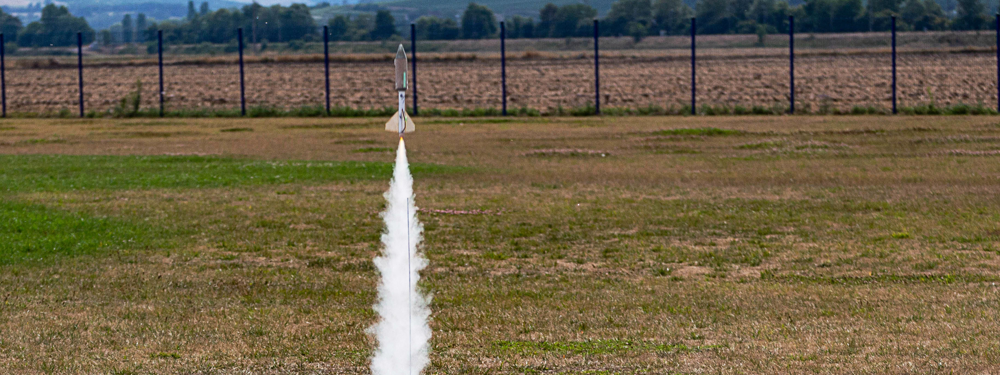
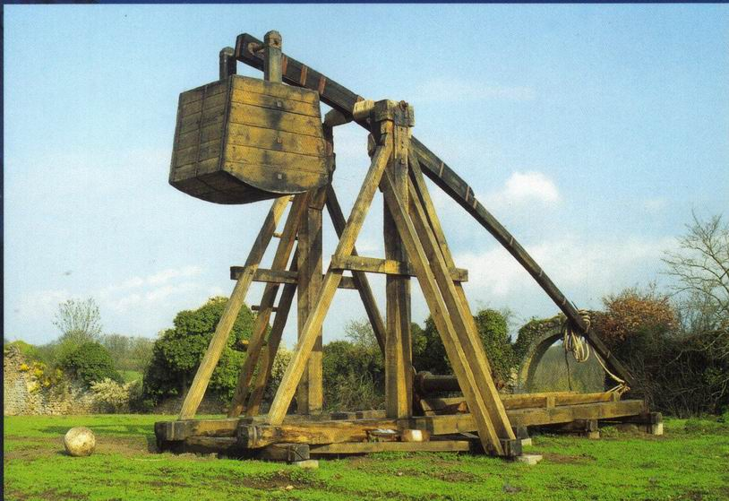
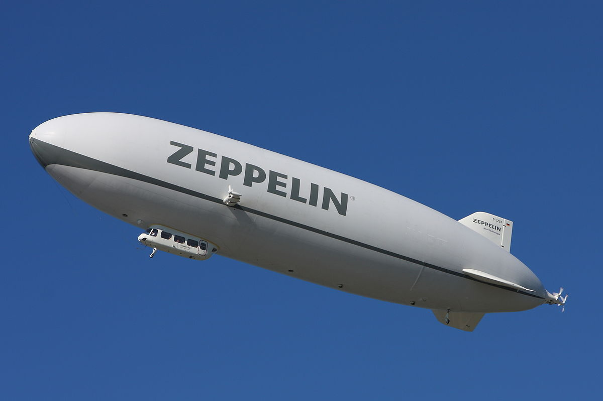
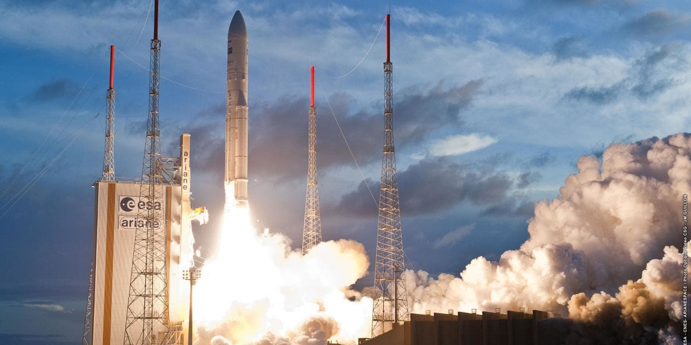

Fabriquons des fusées
Partie 1 : La théorie
Par Dimitri F
On va faire quoi ?
Conception, fabrication et tir d'une micro fusée.
Comment envoyer un truc en l'air ?
Comment envoyer un truc en l'air ?
Propultion balistique (Canon, catapulte) - > Impulstion de départ.
Comment envoyer un truc en l'air ?
Aérostats : tout ce qui est plus léger que l'air. (Zeppelin, ballon sonde, montgolfière...) - > Poussée d'archimède
Comment envoyer un truc en l'air ?
Aérodyne : tout ce qui est plus lour que l'air et basé sur la portance (avions, hélicoptère, drône...) - > Propultion plus portance.

Comment envoyer un truc en l'air ?
Fusées : Vol balistique avec propultion par réaction. (fusées, mini fusées, fusées sondes, missiles...) peuvent etre anaerobique (emporte son propre comburant) - > Moteur de fusée basé sur le principe de réaction
Fonctionnement théorique d'une fusée
Forces exercées sur une fusée.